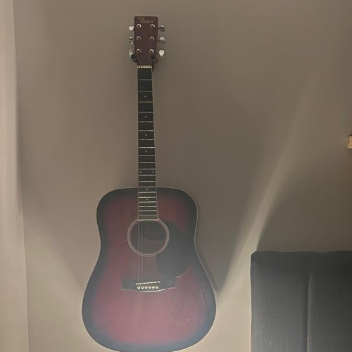
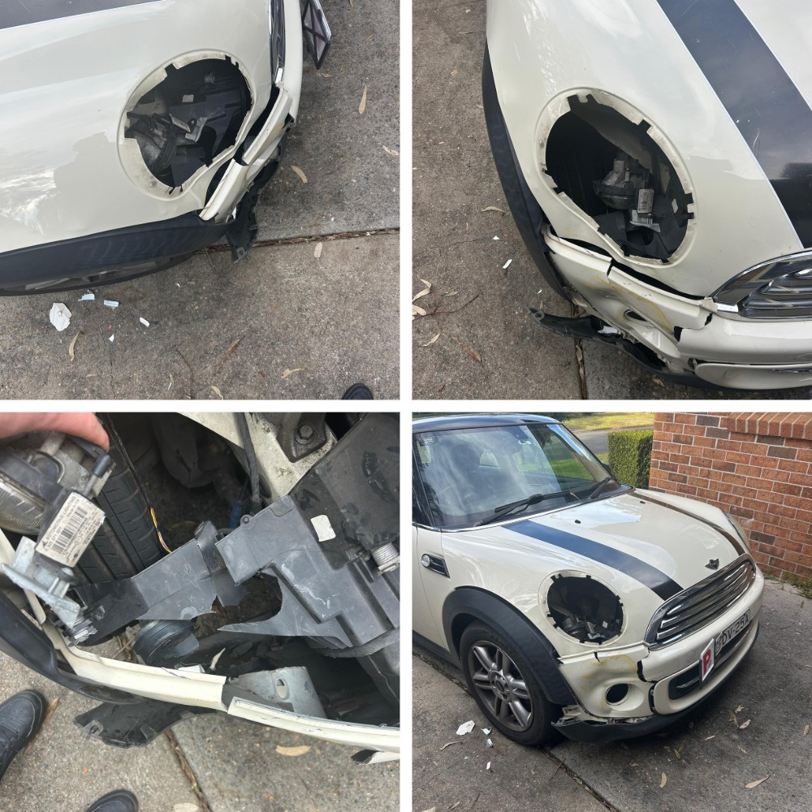

Education and Experience
Diploma of engineering studies
Western Sydney University The College
Studying web design, visual media, creative practice and professional portfolio development.
Leadership and Independant work
Team Management and goal focused Problem Solving
High school house captain, often takes the roll of University group work team Management. Independantly has undertaken many technical projects listed below.
Project Highlights
My proudest, most interesting and most used projects.
Portfolio Cards

Acoustic guitar luithier
My personal Valecia acoustic Build.
Guitar electronics modification
My personaly modified Squire Telecaster.

Body work
Crash rebuild on my Mini Cooper R56.
Evidence and Reflection
Here's a summary of the valuble lessons I've learned within these projects.
I've learned the importance of networking, the use of databases and software like excell
I've learned how to solder, pushed my woodworking skills and my mechanical/design understanding.
I'd like to further refine my soldering skills.
Contact Me
My contact information and my socials.